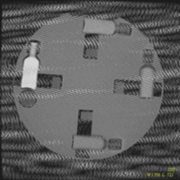

Flair
Artifact

| Image
Info: The system is a 1.5T 5X Advantage. The scan is an Axial Flair with the Head coil. This artifact occurs on every scan to varying degrees; it is not intermittent. Other types of sequences do not exhibit a problem. This artifact did not occur when scanning with this Flair protocol using the Body coil. Symptom: Root
Cause: Solution: |